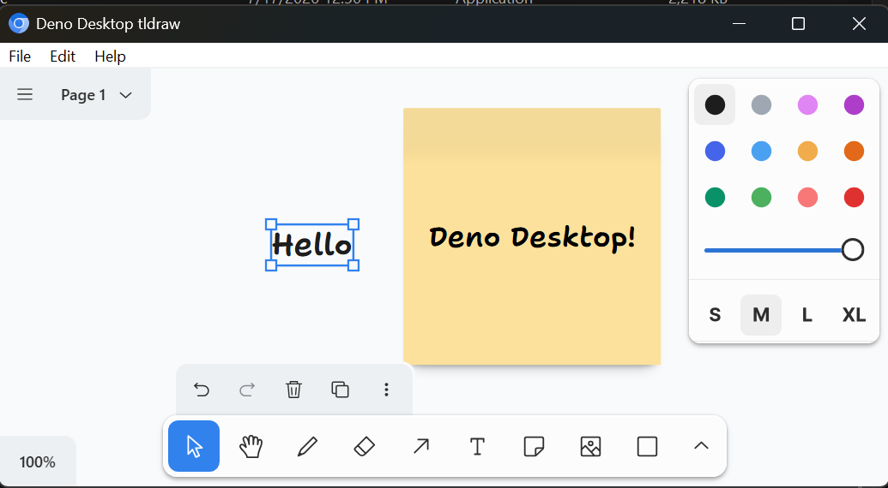

Local files
Open and save drawings as `.tldr.json` snapshots without running a server or syncing to a hosted backend.
Offline canvas template
A starter repo for building a native desktop whiteboard with Deno Desktop, CEF, React, Vite, and the tldraw SDK.

Open and save drawings as `.tldr.json` snapshots without running a server or syncing to a hosted backend.
File and Edit menu actions bridge from Deno Desktop into tldraw's editor and UI action APIs.
The template uses Deno Desktop's CEF backend for consistent Chromium behavior across machines.
Replace the app name, add custom tldraw shapes or tools, wire in your own file format, and ship a desktop app from one Deno project.